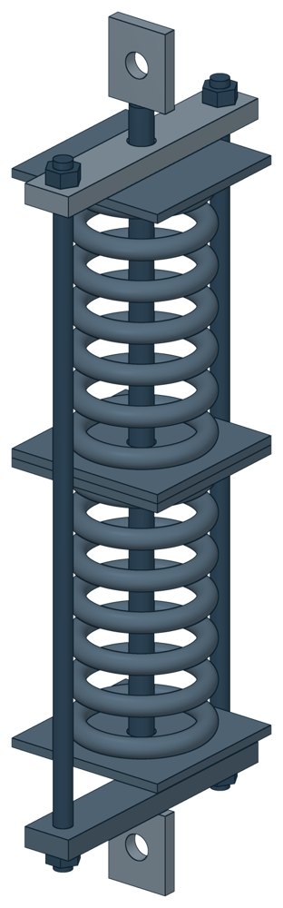

Блоки пружинные сдвоенные ОСТ 34-10-744-93
ОСТ 34-10-744-93. Допускаемая нагрузка: На блок — до 58,45 кН, масса 13,5–735 кг.

- Документ
- ОСТ 34-10-744-93
- Исполнений
- 24
- Допускаемая нагрузка: На пружину
- до 66,6 кН
- Допускаемая нагрузка: На блок
- до 58,45 кН
- Масса
- 13,5–735 кг
- 3D-модели
- у всех исполнений (условные: общий вид по габаритам)
Таблица исполнений ОСТ 34-10-744-93
| Обозначение | Код ПРОМБУРГ | Допускаемая нагрузка: На пружинукН | Допускаемая нагрузка: На блоккН | Высота блокамм | Массакг | 3D |
|---|---|---|---|---|---|---|
| 01 ОСТ 34-10-744-93 | ПБ-34744-0000-1 | 4,41 | 1,26 | 650 | 13,5 | 3D |
| 02 ОСТ 34-10-744-93 | ПБ-34744-0000-2 | 4,41 | 2,73 | 650 | 15,4 | 3D |
| 03 ОСТ 34-10-744-93 | ПБ-34744-0000-3 | 14,71 | 5,24 | 750 | 28,6 | 3D |
| 04 ОСТ 34-10-744-93 | ПБ-34744-0000-4 | 14,71 | 8 | 750 | 31,6 | 3D |
| 05 ОСТ 34-10-744-93 | ПБ-34744-0000-5 | 23,53 | 11,67 | 850 | 45,3 | 3D |
| 06 ОСТ 34-10-744-93 | ПБ-34744-0000-6 | 23,53 | 16,34 | 850 | 49 | 3D |
| 07 ОСТ 34-10-744-93 | ПБ-34744-0000-7 | 33,34 | 19,66 | 900 | 58,1 | 3D |
| 08 ОСТ 34-10-744-93 | ПБ-34744-0000-8 | 33,34 | 26,34 | 950 | 83,9 | 3D |
| 09 ОСТ 34-10-744-93 | ПБ-34744-0000-9 | 47,1 | 32,6 | 1100 | '4.0 | 3D |
| 10 ОСТ 34-10-744-93 | ПБ-34744-0000-10 | 47,1 | 40 | 1100 | 122,6 | 3D |
| 11 ОСТ 34-10-744-93 | ПБ-34744-0000-11 | 53,93 | 48,6 | 1200 | 149,7 | 3D |
| 12 ОСТ 34-10-744-93 | ПБ-34744-0000-12 | 66,6 | 58,45 | 1200 | 173,8 | 3D |
| 13 ОСТ 34-10-744-93 | ПБ-34744-0000-13 | 4,41 | 1,25 | 800 | 15,7 | 3D |
| 14 ОСТ 34-10-744-93 | ПБ-34744-0000-14 | 4,41 | 2,73 | 800 | 18,1 | 3D |
| 15 ОСТ 34-10-744-93 | ПБ-34744-0000-15 | 14,71 | 5,24 | 900 | 33,5 | 3D |
| 16 ОСТ 34-10-744-93 | ПБ-34744-0000-16 | 14,71 | 8 | 900 | 37,1 | 3D |
| 17 ОСТ 34-10-744-93 | ПБ-34744-0000-17 | 23,53 | 11,67 | 1000 | 52,8 | 3D |
| 18 ОСТ 34-10-744-93 | ПБ-34744-0000-18 | 23,53 | 16,34 | 1000 | 57,5 | 3D |
| 19 ОСТ 34-10-744-93 | ПБ-34744-0000-19 | 33,34 | 19,66 | 1100 | 735 | 3D |
| 20 ОСТ 34-10-744-93 | ПБ-34744-0000-20 | 33,34 | 26,34 | 1100 | 97,6 | 3D |
| 21 ОСТ 34-10-744-93 | ПБ-34744-0000-21 | 47,1 | 32,6 | 1350 | 138,3 | 3D |
| 22 ОСТ 34-10-744-93 | ПБ-34744-0000-22 | 47,1 | 40 | 1350 | 149 | 3D |
| 23 ОСТ 34-10-744-93 | ПБ-34744-0000-23 | 53,93 | 48,6 | 1400 | 178 | 3D |
| 24 ОСТ 34-10-744-93 | ПБ-34744-0000-24 | 66,6 | 58,45 | 1400 | 205 | 3D |
Чтобы заказать, сообщите обозначение и код ПРОМБУРГ: +7 (499) 325-51-35, promburg@yandex.ru.
Нормативные документы
- ОСТ 34-10-744-93 Блок пружинный сдвоенный. Конструкция и размеры — документ, по которому изготавливается изделие
Связанные позиции
- Соседний тип: ОСТ 34-10-745-93 — Блоки пружинные опорные
- Соседний тип: ОСТ 34-10-743-93 — Блоки пружинные
Другие типы раздела
Подвески и блоки трубопроводов ТЭС и АЭС (ОСТ 34-10-724…745-93)
- Блоки подвесок приварных ОСТ 34-10-724-93
- Блоки подвесок хомутовых для горизонтальных трубопроводов ОСТ 34-10-725-93
- Блок подвески с опорной балкой ОСТ 34-10-726-93
- Блоки подвесок приварных для вертикальных трубопроводов ОСТ 34-10-727-93
- Блоки подвесок хомутовых ОСТ 34-10-728-93
- Блок подвески с проушиной ОСТ 34-10-729-93
- Блоки подвески с серьгой ОСТ 34-10-730-93
- Блоки подвески с плавником ОСТ 34-10-731-93
- Блок подвески с траверсой ОСТ 34-10-732-93
- Хомуты для горизонтальных трубопроводов ОСТ 34-10-735-93
- Хомуты для вертикальных трубопроводов ОСТ 34-10-736-93
- Балки опорные ОСТ 34-10-737-93
- Тяги резьбовые с муфтами ОСТ 34-10-739-93
- Блоки крепления подвески ОСТ 34-10-740-93
- Тяги шарнирные ОСТ 34-10-742-93
- Блоки пружинные ОСТ 34-10-743-93
- Блоки пружинные опорные ОСТ 34-10-745-93
Частые вопросы
По какому диаметру подбирать — Dн или Ду?
По наружному диаметру трубы Dн: именно он стоит в таблицах серии. Ду — условный проход, округлённая величина: Ду 100 соответствует Dн 108. В заявке указывайте Dн и толщину стенки трубы.
В старом проекте нагрузка в тс, а здесь в кН. Как сравнить?
Серия 4.903-10 даёт нагрузки в тонна-силах, серия 5.903-13 — в килоньютонах. 1 тс = 9,81 кН, то есть 10 тс — это около 98 кН. В таблицах каталога переключатель единиц пересчитывает значения.
Из какой стали изготавливаются опоры?
По рабочим чертежам серии листовые детали — Ст3сп5 ГОСТ 14637-89, хомуты из круга — сталь 20 ГОСТ 1050-88. Для районов с низкой расчётной температурой воздуха применяется низколегированная сталь, в том числе 09Г2С; размеры опор при этом не меняются. В заявке укажите расчётную температуру наружного воздуха.
Почему часть поверхностей опоры не окрашена?
Поверхности под приварку к трубе и к несущей конструкции оставляют без краски, иначе шов получится некачественным. Их консервируют смазкой, которую снимают перед сваркой.
Что указать в заявке, чтобы получить цену без уточнений?
Обозначение с номером исполнения или код ПБ, количество, Dн и стенку трубы, расчётную температуру наружного воздуха, покрытие, город доставки и желаемый срок. Кнопка «В заявку» в таблице собирает спецификацию, которую можно выгрузить в Excel или отправить письмом.